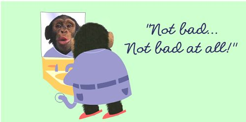

今天生日 @ Aug 15, 2008
今天是我的生日哦，从昨天凌晨开始陆续收到生日祝福的短信。
总有意想不到的关怀在生日这天出现，其中有个叫caicai的朋友，我们通过中国茶相识，多少年？也许5年？有一年的新年收到她从深圳寄来的贺卡和信，洋洋洒洒写了不小的篇幅，我感动的是这个女子如此细腻温情，会对远方未曾谋面的网友付出感情和精力。她比我大一个月，如今有了一个孩子，她说：“其实孩子改变不了生活，改变的是自己的宽容和历炼，我依然故我，你也会一样！鼓励你要个孩子，很棒的，只要你不给它太多期许，只当是个伙伴。我是要孩子可以不要男人的女人，我怀孕前就是这种想法。孩子真的是你的，而不是所谓的爱情结晶......”对于这样的观点我还真需要花点时间消化一下！
躺在床上看电视的时候，忽然厌恶起每一年的纪念日，这一天会有一些面孔相继出现在记忆里，喜欢或不喜欢。得花时间和精力去让这一天特别一些...也许还会因为这一天没有获得期待中某人的祝福而心情低垂。记得有个BLOG题头上这样写：我要躺在你的睫毛下，天天都过情人节。还记得某人曾说过：“过好每一天，而不仅仅是这一天。”
回头观望那些纪念日，不过是有一个正当的FB理由，当这个理由都不再被需要时，这一天也不会有别于其他日子。

33 Responses to “今天生日”
2008-08-15
生日快乐!!!———有生的日子,天天快乐!
2008-08-15
生也快乐
日也快乐
呵呵：）
2008-08-15
生日快乐
2008-08-15
女人怕老，男人怕小
归根结底是太自怜自爱咯
2008-08-15
Happy Birthday.
2008-08-15
Attitude is a little thing that makes a big difference.
生活，随你自己怎么看。
2008-08-15
生日快乐! 通过CHINESE TEA认识CHRISTINA也有五年了，感觉是我们一起走过了一段青春岁月, 我们还在路上, 呵呵!
2008-08-15
”过好每一天，而不仅仅是这一天。”
潜茶第三年，恭祝中国茶生日快乐，生活快意，生命健康，生的光荣！
2008-08-15
貌似潜茶4年，发言：亲爱的，生日快乐！（P.S. chayer即茶叶儿）
2008-08-15
一如继往的喜欢你，亲爱的美女，生日快乐!有生的日子天天快乐！
2008-08-15
生日快乐：）
默默祝福
2008-08-15
生日快乐！
2008-08-15
生日快乐———有生的日子,天天快乐
默默祝福
2008-08-15
啊呀~一下出来这么多从来没见过的ID，原来还有你们在这里呢~感谢你们的祝福哦~大家都要快乐呀~
2008-08-15
最近铁观音
配蛋糕不错
呵呵：）
2008-08-15
生日快乐！真诚地祝福~~
2008-08-15
生日快乐呀 ～ 我看到的真及时
2008-08-15
Happy Birthday!
2008-08-16
哎， 千言万语，尽在不言中
2008-08-16
最近老想着某一个网站 刚刚突然就从脑海中蹦出来 中国茶 还是02年底的了 我不知道怎么了 那时刚开始blog 几年间 断续 更换N个 我不知道自己在做什么 快六年以后在这里第二次留言的家伙 我都不知道留什么名字了 因为我不知道自己是谁 生日快乐 还有 记得我也是狮子的 也是在这几天 唉
2008-08-16
昨天没有来party..真可惜。。
2008-08-17
非常荣幸茶主来桃花源做客。迟到的生日祝福，希望永远美丽，人如此，心情亦然。
2008-08-18
迟到了……
潜茶二载，小小茶童祝茶主生日快乐
2008-08-18
感谢大家哦：D
2008-08-18
how old are you?
2008-08-18
迟到的祝福，生日快乐，永远快乐。我在成都休假，欢迎来成都玩哦。
2008-08-18
迟到的祝福: 生日快乐!
2008-08-18
Happy Birthday Christina if it’s a late birthday greeting. But I always believe, a late birthday greeting is far better than none at all. Anyway, I love your website.
2008-08-19
happy birthday!
2008-08-19
生日快乐，天天快乐
2008-08-20
来中国茶五年了, 几乎全是潜水, 今天看到这忍不住浮上来, 祝Christina生日快乐, 尽管, 我迟到许多:)
祝福亲爱的你, 每天快乐多一点, 烦恼少一些, 永远美丽迷人, 还要, 总知道会有我们默默关注你, 为你祝福和加油!! :)
PS: 我也
2008-08-20
快乐永远
2008-08-20
belated birthday greeting from Yun: Happy birth-month! All the best!
Leave A Reply
存档只读，评论已关闭。